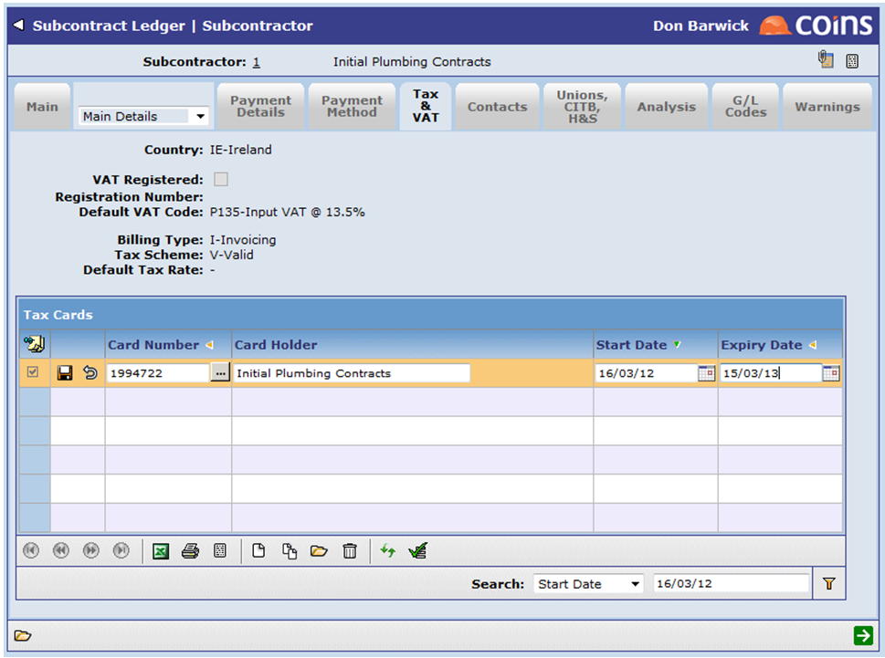

When setting up a subcontractor, you need to specify the withholding tax treatment for that subcontractor.
On the Tax &
|
T |
Taxable: Withholding tax is liable to be applied to transactions for this subcontractor (although not all transactions will necessarily be taxed dependent on the rate code applied to each transaction). |
|
U |
Unknown: The withholding tax status of this subcontractor is unknown. No payments can be made for the subcontractor until this status is changed. This can be used during initial loading of data in the |
|
V |
Valid: The subcontractor holds a tax card. Transactions are not liable to withholding tax unless this has expired. Details of the Tax Card would be input as detailed below. This would be used in Qatar but not in Oman or Saudi Arabia. |
|
X |
Exempt: None of the transactions for this subcontractor are liable to withholding tax. This may be due to the residency of the subcontractor or the type of transactions (but not due to the holding of a tax card - see V above). |
For subcontractors liable to withholding tax (Tax Scheme = T), select the default tax rate for the subcontractor.
Subcontractor Tax &
This acts as the default rate for all new subcontracts for this subcontractor and for all new invoices on any linked
If there are likely to be a mixture of different tax treatments, leave the default rate blank - this will force the user to make a selection on the subcontract or invoice.
For subcontractors with a valid tax card (Tax Scheme = V), record details of the Tax Card.
Subcontractor Tax Card Maintenance
For subcontracts where the subcontractor has a tax scheme of T, the tax rate on the subcontract will default from the default rate set against the subcontractor (unless this has been left blank). This will then act as the rate for all certificates for this subcontract.
If the rate on the subcontract is changed then the new rate will be applied to certificates input after this change has been made. If parameter SC/TAXATPAY is set to Y then the new rate will also be applied to certificates already input but paid after this change (by recalculating the tax during the payment run, either at the point of freezing the payment batch or at the point of producing the payment dependent on the setting of parameter SC/TAXSTAGE).
For any